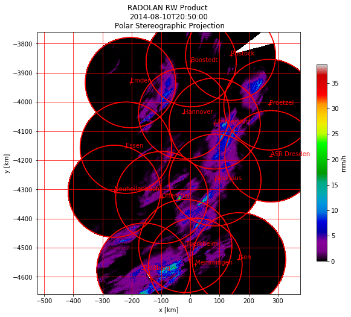

RADOLAN Radar Network¶
In this chapter the RW-product is shown in WGS84 and the RADOLAN Polar Stereographic Projection. All for the compositing process used radars are extracted from the metadata and plotted with their respective maximum range rings and location information.
In [1]:
import wradlib as wrl
import matplotlib.pyplot as pl
import matplotlib as mpl
import warnings
warnings.filterwarnings('ignore')
try:
get_ipython().magic("matplotlib inline")
except:
pl.ion()
import numpy as np
from osgeo import osr
In [2]:
def get_radar_locations():
radars = {}
radar = {'name': 'ASR Dresden', 'wmo': 10487, 'lon': 13.76347,
'lat': 51.12404, 'alt': 261}
radars['ASD'] = radar
radar = {'name': 'Boostedt', 'wmo': 10132, 'lon': 10.04687,
'lat': 54.00438, 'alt': 124.56}
radars['BOO'] = radar
radar = {'name': 'Dresden', 'wmo': 10488, 'lon': 13.76865, 'lat': 51.12465,
'alt': 263.36}
radars['DRS'] = radar
radar = {'name': 'Eisberg', 'wmo': 10780, 'lon': 12.40278, 'lat': 49.54066,
'alt': 798.79}
radars['EIS'] = radar
radar = {'name': 'Emden', 'wmo': 10204, 'lon': 7.02377, 'lat': 53.33872,
'alt': 58}
radars['EMD'] = radar
radar = {'name': 'Essen', 'wmo': 10410, 'lon': 6.96712, 'lat': 51.40563,
'alt': 185.10}
radars['ESS'] = radar
radar = {'name': 'Feldberg', 'wmo': 10908, 'lon': 8.00361, 'lat': 47.87361,
'alt': 1516.10}
radars['FBG'] = radar
radar = {'name': 'Flechtdorf', 'wmo': 10440, 'lon': 8.802, 'lat': 51.3112,
'alt': 627.88}
radars['FLD'] = radar
radar = {'name': 'Hannover', 'wmo': 10339, 'lon': 9.69452, 'lat': 52.46008,
'alt': 97.66}
radars['HNR'] = radar
radar = {'name': 'Neuhaus', 'wmo': 10557, 'lon': 11.13504, 'lat': 50.50012,
'alt': 878.04}
radars['NEU'] = radar
radar = {'name': 'Neuheilenbach', 'wmo': 10605, 'lon': 6.54853,
'lat': 50.10965, 'alt': 585.84}
radars['NHB'] = radar
radar = {'name': 'Offenthal', 'wmo': 10629, 'lon': 8.71293, 'lat': 49.9847,
'alt': 245.80}
radars['OFT'] = radar
radar = {'name': 'Proetzel', 'wmo': 10392, 'lon': 13.85821,
'lat': 52.64867, 'alt': 193.92}
radars['PRO'] = radar
radar = {'name': 'Memmingen', 'wmo': 10950, 'lon': 10.21924,
'lat': 48.04214, 'alt': 724.40}
radars['MEM'] = radar
radar = {'name': 'Rostock', 'wmo': 10169, 'lon': 12.05808, 'lat': 54.17566,
'alt': 37}
radars['ROS'] = radar
radar = {'name': 'Isen', 'wmo': 10873, 'lon': 12.10177, 'lat': 48.1747,
'alt': 677.77}
radars['ISN'] = radar
radar = {'name': 'Tuerkheim', 'wmo': 10832, 'lon': 9.78278,
'lat': 48.58528, 'alt': 767.62}
radars['TUR'] = radar
radar = {'name': 'Ummendorf', 'wmo': 10356, 'lon': 11.17609,
'lat': 52.16009, 'alt': 183}
radars['UMM'] = radar
return radars
In [3]:
# load radolan file
rw_filename = wrl.util.get_wradlib_data_file('radolan/showcase/raa01-rw_10000-1408102050-dwd---bin.gz')
rwdata, rwattrs = wrl.io.read_RADOLAN_composite(rw_filename)
In [4]:
# print the available attributes
print("RW Attributes:", rwattrs)
RW Attributes: {'producttype': 'RW', 'datetime': datetime.datetime(2014, 8, 10, 20, 50), 'radarid': '10000', 'datasize': 1620000, 'maxrange': '150 km', 'radolanversion': '2.13.1', 'precision': 0.1, 'intervalseconds': 3600, 'nrow': 900, 'ncol': 900, 'radarlocations': ['boo', 'ros', 'emd', 'hnr', 'umd', 'pro', 'ess', 'asd', 'neu', 'nhb', 'oft', 'tur', 'isn', 'fbg', 'mem'], 'nodataflag': -9999, 'secondary': array([ 799, 800, 801, ..., 806263, 806264, 807163]), 'cluttermask': array([], dtype=int64)}
In [5]:
# mask data
sec = rwattrs['secondary']
rwdata.flat[sec] = -9999
rwdata = np.ma.masked_equal(rwdata, -9999)
# create radolan projection object
proj_stereo = wrl.georef.create_osr("dwd-radolan")
# create wgs84 projection object
proj_wgs = osr.SpatialReference()
proj_wgs.ImportFromEPSG(4326)
# get radolan grid
radolan_grid_xy = wrl.georef.get_radolan_grid(900, 900)
x1 = radolan_grid_xy[:, :, 0]
y1 = radolan_grid_xy[:, :, 1]
# convert to lonlat
radolan_grid_ll = wrl.georef.reproject(radolan_grid_xy,
projection_source=proj_stereo,
projection_target=proj_wgs)
lon1 = radolan_grid_ll[:, :, 0]
lat1 = radolan_grid_ll[:, :, 1]
In [6]:
# range array 150 km
print("Max Range: ", rwattrs['maxrange'])
r = np.arange(1, 151) * 1000
# azimuth array 1 degree spacing
az = np.linspace(0, 360, 361)[0:-1]
Max Range: 150 km
In [7]:
# get radar dict
radars = get_radar_locations()
In [8]:
def plot_radar(radar, ax, reproject=False):
x_loc, y_loc = (radar['lon'], radar['lat'])
# build polygons for maxrange rangering
polygons = wrl.georef.polar2polyvert(r, az,
(x_loc, y_loc))
polygons.shape = (len(az), len(r), 5, 2)
polygons = polygons[:, -1, :, :]
if reproject:
# reproject to radolan polar stereographic projection
polygons = wrl.georef.reproject(polygons,
projection_source=proj_wgs,
projection_target=proj_stereo)
# reproject lonlat radar location coordinates to
# polar stereographic projection
x_loc, y_loc = wrl.georef.reproject(x_loc, y_loc,
projection_source=proj_wgs,
projection_target=proj_stereo)
# create PolyCollections and add to respective axes
polycoll = mpl.collections.PolyCollection(polygons, closed=True,
edgecolors='r',
facecolors='r')
ax.add_collection(polycoll, autolim=True)
# plot radar location and information text
ax.plot(x_loc, y_loc, 'r+')
ax.text(x_loc, y_loc, radar['name'], color='r')
In [9]:
# plot two projections side by side
fig1 = pl.figure(figsize=(10,8))
ax1 = fig1.add_subplot(111, aspect='equal')
pm = ax1.pcolormesh(lon1, lat1, rwdata, cmap='spectral')
cb = fig1.colorbar(pm, shrink=0.75)
cb.set_label("mm/h")
pl.xlabel("Longitude ")
pl.ylabel("Latitude")
pl.title(
'RADOLAN RW Product \n' + rwattrs['datetime'].isoformat() + '\n WGS84')
pl.xlim((lon1[0, 0], lon1[-1, -1]))
pl.ylim((lat1[0, 0], lat1[-1, -1]))
pl.grid(color='r')
for radar_id in rwattrs['radarlocations']:
# get radar coords etc from dict
# repair Ummendorf ID
if radar_id == 'umd':
radar_id = 'umm'
radar = radars[radar_id.upper()]
plot_radar(radar, ax1)

In [10]:
fig2 = pl.figure(figsize=(10,8))
ax2 = fig2.add_subplot(111, aspect='equal')
pm = ax2.pcolormesh(x1, y1, rwdata, cmap='spectral')
cb = fig2.colorbar(pm, shrink=0.75)
cb.set_label("mm/h")
pl.xlabel("x [km]")
pl.ylabel("y [km]")
pl.title('RADOLAN RW Product \n' + rwattrs[
'datetime'].isoformat() + '\n Polar Stereographic Projection')
pl.xlim((x1[0, 0], x1[-1, -1]))
pl.ylim((y1[0, 0], y1[-1, -1]))
pl.grid(color='r')
for radar_id in rwattrs['radarlocations']:
# get radar coords etc from dict
# repair Ummendorf ID
if radar_id == 'umd':
radar_id = 'umm'
radar = radars[radar_id.upper()]
plot_radar(radar, ax2, reproject=True)
